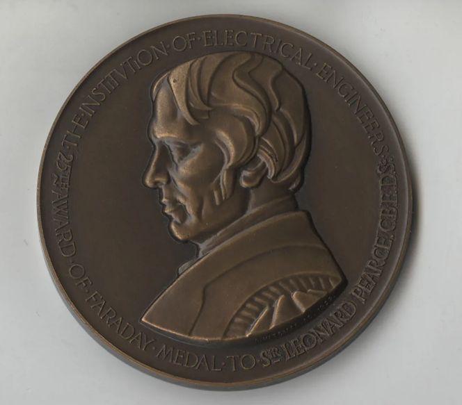

Biografía
Bjarne Stroustrup was born in Aarhus, Denmark, in 1950. He received a
master's in mathematics from Aarhus University in 1975 and a PhD in
computer science from Cambridge University in 1979. Stroustrup then
joined Bell Labs' Computer Science Research Center in Murray Hill, New
Jersey, where he designed and implemented C++.
This language, based on C and inspired by Simula, provides a set of
general and flexible abstraction mechanisms that can be mapped
directly and efficiently onto computer hardware. C++ revolutionized
the software industry by enabling a variety of software development
techniques-including object-oriented programming, generic programming,
and general resource management-to be deployed at scale.
For more than two decades, C++ has been among the most widely used
programming languages, with applications in areas including general
systems programming, communications, computer graphics, games,
user-interfaces, embedded systems, financial systems, avionics, and
scientific computation. The influence of C++ and the ideas it
pioneered and popularized are clearly visible far beyond the C++
community. Over the next decades, Stroustrup guided the further
evolution of C++ through his involvement in its ISO standards effort,
his books, and his many academic and popular papers.
Stroustrup is a managing director in the technology division of Morgan
Stanley in New York City, a visiting professor at Columbia University,
and a Distinguished Research Professor at Texas A&M University (where
he taught for a decade). His research interests include design,
programming techniques, distributed systems, performance, reliability,
and maintainability. His honors include: ACM's Grace Murray Hopper
Award (1993), member of the US National Academy of Engineering (2004),
Sigma Xi's William Procter Prize for Scientific Achievement (2005),
and Aarhus University's Rigmor og Carl Holst-Knudsens Videnskapspris
(2010). He is a Fellow of IEEE and ACM.
Logros
- 1990 - Fue nombrado uno de los "doce mejores científicos jóvenes de América" por la revista Fortune.
- 1993 - Premio Grace Murray Hopper de la ACM (Association for Computing Machinery) por sus primeros trabajos en C++.
- 1995 - La revista Byte nombró a Stroustrup una de las veinte personas que más ha influido en la industria informática.
- 1996 - Stroustrup fue nombrado socio en AT&T: "Por sus fundamentales contribuciones al desarrollo de lenguajes informáticos y programación orientada a objetos, culminando en el lenguaje de programación C++."
- 1998 - Stroustrup fue nombrado socio en ACM: "Por sus primeros trabajos construyendo los cimientos del lenguaje de programación C++. Basándose en los pilares y el continuado esfuerzo del Dr. Stroustrup, C++ se ha convertido en el lenguaje de programación más influyente de la historia de la informática".
- 2004 - Academia Nacional (Estados Unidos) de Ingeniería, 2004.
- 2004 - Premio 200 al Empresario en Informática de la IEEE Computer Society.

Legado
El legado de Bjarne Stroustrup en la informática es el desarrollo del
lenguaje de programación C++, que ha influido en muchos otros
lenguajes modernos: C++ es un lenguaje de programación multiparadigma
que combina características de programación orientada a objetos con la
capacidad de bajo nivel del lenguaje C.
Es un lenguaje potente,eficiente y rápido, que se utiliza en una
amplia gama de aplicaciones, como videojuegos, sistemas integrados,
películas de animación, herramientas médicas, y más. C++ es altamente
portátil y se utiliza a menudo para desarrollar aplicaciones
multiplataforma.
C++ es un componente esencial de la cultura tecnológica, presente en
ordenadores, teléfonos, coches, el Telescopio Espacial James Webb, los
rovers de las misiones en Marte, y más.